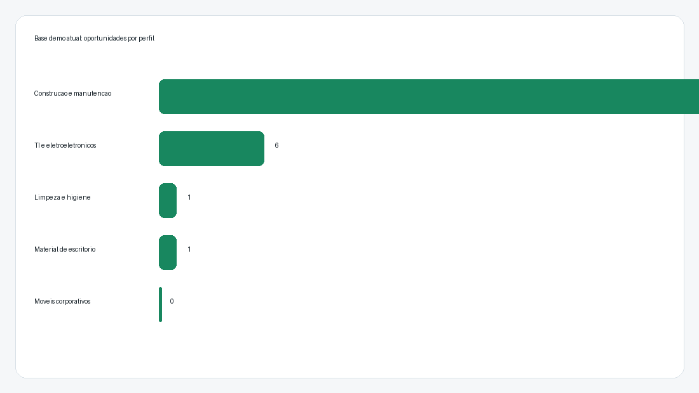
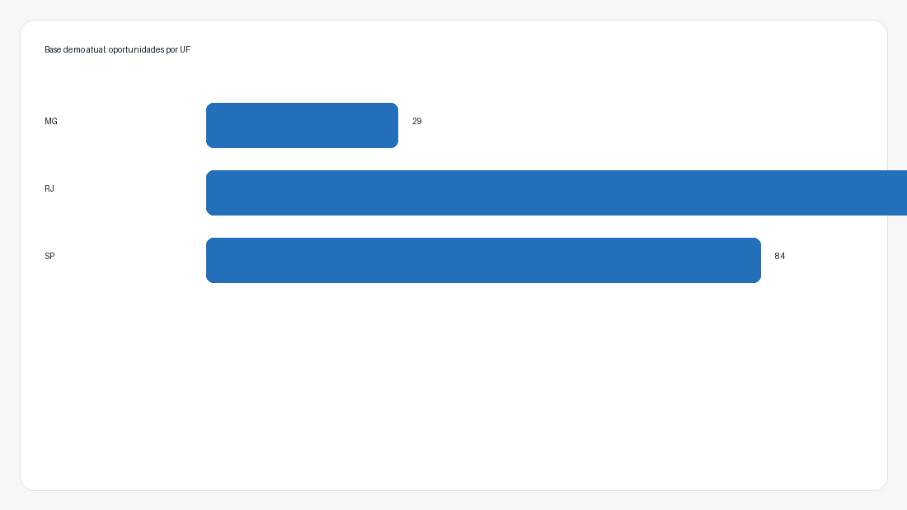
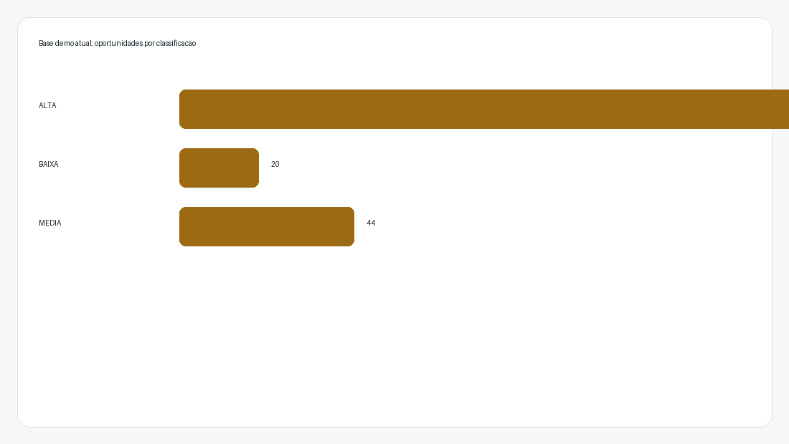
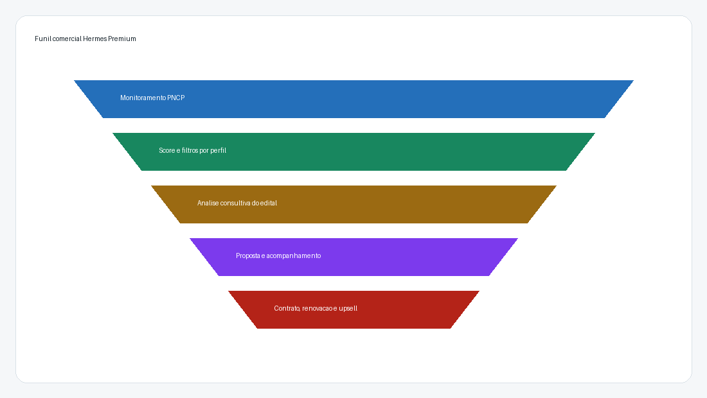

Hermes Premium
Plano de negocios e produto para uma plataforma de inteligencia comercial em licitacoes publicas, combinando software, consultoria e operacao assistida.
Atualizado em 11/05/2026
Plano de negocios e produto para uma plataforma de inteligencia comercial em licitacoes publicas, combinando software, consultoria e operacao assistida.
Atualizado em 11/05/2026
O Hermes Premium deve ser posicionado como uma solucao de inteligencia comercial para empresas que desejam vender melhor para o setor publico. A proposta nao e apenas encontrar editais: e transformar dados publicos em oportunidades qualificadas, com score, explicacao, historico, rotina de coleta, exportacao e apoio consultivo.
O PNCP e o sitio oficial de divulgacao centralizada de contratacoes publicas previsto na Lei 14.133/2021. Segundo o portal oficial, ele centraliza dados de contratacoes da Uniao, estados e municipios e oferece pesquisa de editais, atas, contratos, dados abertos e APIs. O Compras.gov.br tambem reforca a jornada do fornecedor, com SICAF, oportunidades e operacionalizacao de compras publicas.
| Dor do cliente | Resposta do Hermes |
|---|---|
| Excesso de editais irrelevantes | Perfis de negocio, palavras-chave, termos negativos e score. |
| Dificuldade de priorizar oportunidades | Classificacao ALTA/MEDIA/BAIXA, valor estimado e motivo do score. |
| Rotina comercial manual | Coleta agendada, historico e exportacao Excel/CSV. |
| Baixa maturidade em licitacoes | Pacotes consultivos de habilitacao, leitura de edital e proposta. |
O MVP ja possui login, dashboard, coleta PNCP, banco SQLite, filtros por perfil, estado, classificacao, valor e texto, tela de detalhe, motivo do score, historico de coletas, agendamento local e exportacao CSV/Excel.



O ICP recomendado sao pequenas e medias empresas com capacidade operacional, certidoes organizaveis e produtos ou servicos recorrentes para orgaos publicos.
| Plano | Preco inicial sugerido | Entrega |
|---|---|---|
| Monitoramento | R$ 297 a R$ 497/mes | 1 perfil, ate 3 UFs, alertas, dashboard e exportacao. |
| Inteligencia Comercial | R$ 797 a R$ 1.497/mes | Ate 3 perfis, score, relatorio semanal e reuniao mensal. |
| Premium Consultivo | R$ 2.500 a R$ 6.000/mes | Analise de editais, apoio em proposta, precificacao e acompanhamento. |
| Avulso | R$ 300 a R$ 1.500 por edital | Leitura de edital, checklist de habilitacao ou revisao de proposta. |

O software gera recorrencia; a consultoria aumenta ticket medio; a operacao assistida reduz churn e cria relacionamento continuo.
| Fase | Objetivo | Entregas |
|---|---|---|
| 0-30 dias | Demo vendavel | Base demo, dashboard polido, plano comercial, pitch e landing page. |
| 31-60 dias | Piloto pago | Hospedagem, backup, alertas e 3 clientes piloto. |
| 61-90 dias | Operacao repetivel | Relatorio semanal, onboarding, playbook de proposta e suporte. |
| 90+ dias | Escala | Multiusuario, permissoes, e-mail/WhatsApp, CRM e IA de edital. |
Usar o dashboard atual para revisar oportunidades reais dos perfis mais fortes, especialmente construcao/manutencao e TI. A partir dessa revisao, montar uma apresentacao comercial curta e abordar 5 empresas candidatas a piloto.